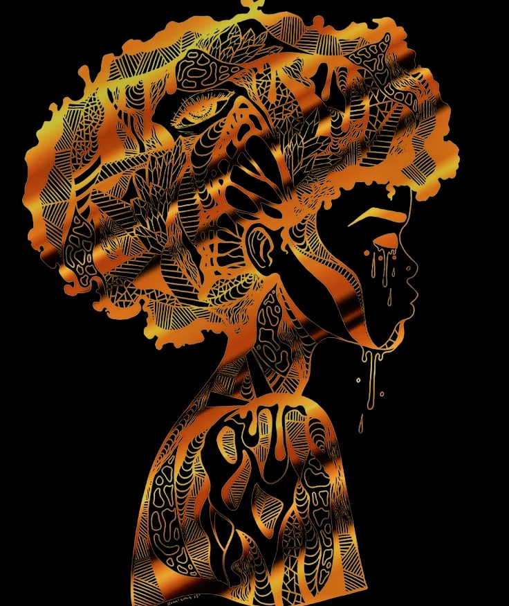
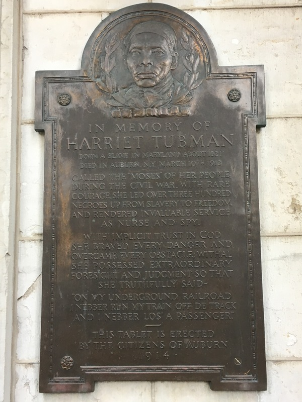
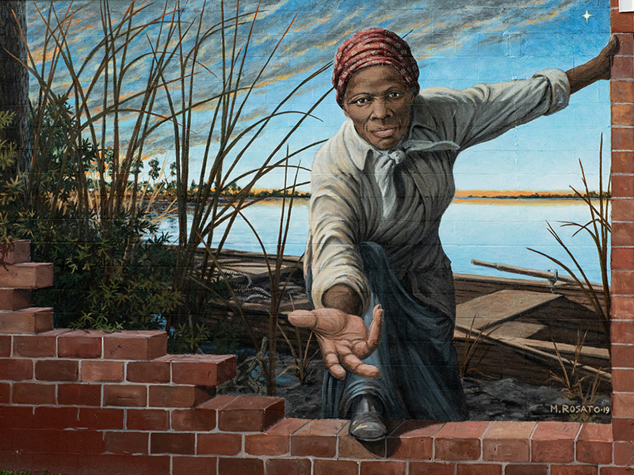
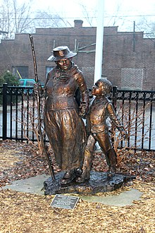
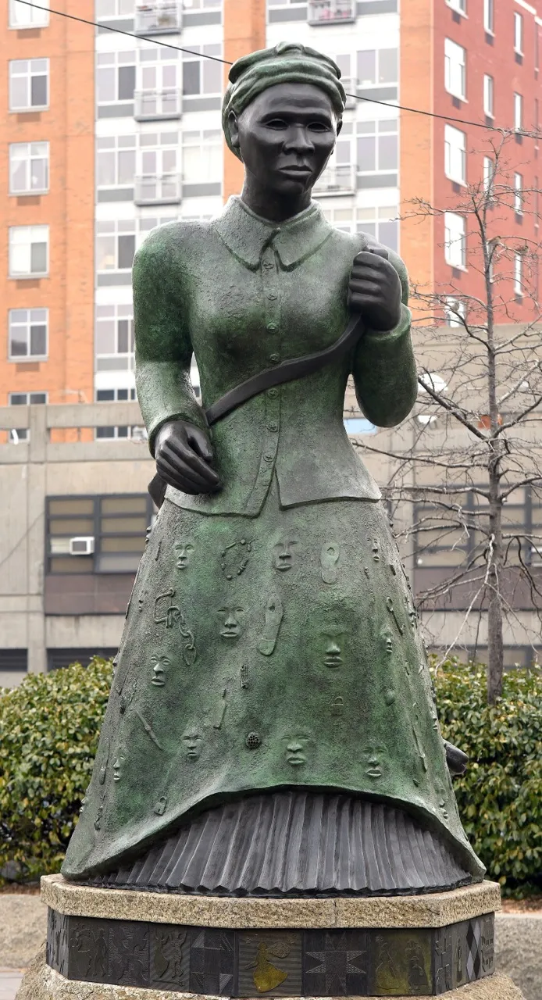
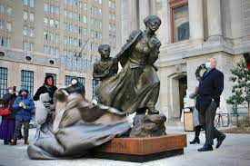

Harriet
Tubman
"God's time is always near. He set the North Star in the heavens; He gave me the strength in my limbs. He meant I should be free"
Life and Works 
Harriet Tubman was an escaped enslaved woman who became a “conductor” on the Underground Railroad, leading enslaved people to freedom before the Civil War, all while carrying a bounty on her head. But she was also a nurse, a Union spy and a women’s suffrage supporter. Tubman is one of the most recognized icons in American history and her legacy has inspired countless people from every race and background.
Harriet Tubman is perhaps the most well-known of all the Underground Railroad's "conductors."
During a ten-year span she made 19 trips into the South and escorted over 300 slaves to freedom.
And, as she once proudly pointed out to Frederick Douglass, in all of her journeys she "never lost a
single passenger."
Tubman was born a slave in Maryland's Dorchester County around 1820. At age five or six, she began to
work as a house servant. Seven years later she was sent to work in the fields. While she was still in her
early teens, she suffered an injury that would follow her for the rest of her life. Always ready to stand
up for someone else, Tubman blocked a doorway to protect another field hand from an angry overseer.
The overseer picked up and threw a two-pound weight at the field hand. It fell short, striking Tubman
on the head. She never fully recovered from the blow, which subjected her to spells in which she would
fall into a deep sleep.
Around 1844 she married a free black named John Tubman and took his last name. (She was born Araminta
Ross; she later changed her first name to Harriet, after her mother.) In 1849, in fear that she, along
with the other slaves on the plantation, was to be sold, Tubman resolved to run away. She set out one
night on foot. With some assistance from a friendly white woman, Tubman was on her way. She followed the
North Star by night, making her way to Pennsylvania and soon after to Philadelphia, where she found work
and saved her money. The following year she returned to Maryland and escorted her sister and her sister's
two children to freedom. She made the dangerous trip back to the South soon after to rescue her brother
and two other men. On her third return, she went after her husband, only to find he had taken another
wife. Undeterred, she found other slaves seeking freedom and escorted them to the North.
Tubman returned to the South again and again. She devised clever techniques that helped make her "forays"
successful, including using the master's horse and buggy for the first leg of the journey; leaving on a
Saturday night, since runaway notices couldn't be placed in newspapers until Monday morning; turning
about and heading south if she encountered possible slave hunters; and carrying a drug to use on a baby
if its crying might put the fugitives in danger. Tubman even carried a gun which she used to threaten
the fugitives if they became too tired or decided to turn back, telling them, "You'll be free or die."
By 1856, Tubman's capture would have brought a $40,000 reward from the South. On one occasion, she
overheard some men reading her wanted poster, which stated that she was illiterate. She promptly pulled
out a book and feigned reading it. The ploy was enough to fool the men.
Tubman had made the perilous trip to slave country 19 times by 1860, including one especially challenging
journey in which she rescued her 70-year-old parents. Of the famed heroine, who became known as "Moses,"
Frederick Douglass said, "Excepting John Brown -- of sacred memory -- I know of no one who has willingly
encountered more perils and hardships to serve our enslaved people than Harriet Tubman"
And John Brown, who conferred with "General Tubman" about his plans to raid Harpers Ferry, once said that she
was "one of the bravest persons on this continent."
Becoming friends with the leading abolitionists of the day, Tubman took part in antislavery meetings.
On the way to such a meeting in Boston in 1860, in an incident in Troy, New York, she helped a fugitive
slave who had been captured.
During the Civil War Harriet Tubman worked for the Union as a cook, a nurse, and even a spy. After the war
she settled in Auburn, New York, where she would spend the rest of her long life. She died in 1913.
Quotes
Legacy
Widely known and well-respected while she was alive, Tubman became an American icon in the years after she died. A survey at the end of the 20th century named her as one of the most famous civilians in American history before the Civil War, third only to Betsy Ross and Paul Revere.
She inspired generations of African Americans struggling for equality and civil rights; she was praised by leaders across the political spectrum. The city of Auburn commemorated her life with a plaque on the courthouse.
The Harriet Tubman National Historical Park in Auburn, authorized by the 2015 National Defense Authorization Act, was established on January 10, 2017.
In March 2017 the Harriet Tubman Underground Railroad Visitor Center was inaugurated in Maryland within Harriet Tubman Underground Railroad State Park.
The act also created the Harriet Tubman Underground Railroad National Historical Park in Maryland within the authorized boundary of the national monument, while permitting later additional acquisitions.
The Harriet Tubman Museum opened in Cape May, New Jersey in 2020.
Statue by Jane Decker commemorating Harriet Tubman in Ypsilanti, Michigan. The bronze statue depicts Harriet Tubmann walking and holding the hand of a young boy.
The Harriet Tubman Memorial, also known as Swing Low, located in Manhattan in New York City, honors the life of abolitionist Harriet Tubman. The intersection at which it stands was previously a barren traffic island, and is now known as "Harriet Tubman Triangle. The memorial is a 13-foot (4.0 m) bronze and Chinese granite portrait sculpture, and was created by sculptor Alison Saar. The statue depicts Tubman striding forward despite roots pulling on the back of her skirt; these represent the roots of slavery. Her skirt is decorated with images representing the former slaves who Tubman assisted to escape. The base of the statue features illustrations representing moments from Tubman's life, alternated with traditional quilting symbols.
A 9-foot Harriet Tubman statue to be feautured in front of Philadelphia City Hall's North Apron through the end of March, 2022, to celebrate the abolitionists 200th birthday, as well as Black History and Women's History Months.
